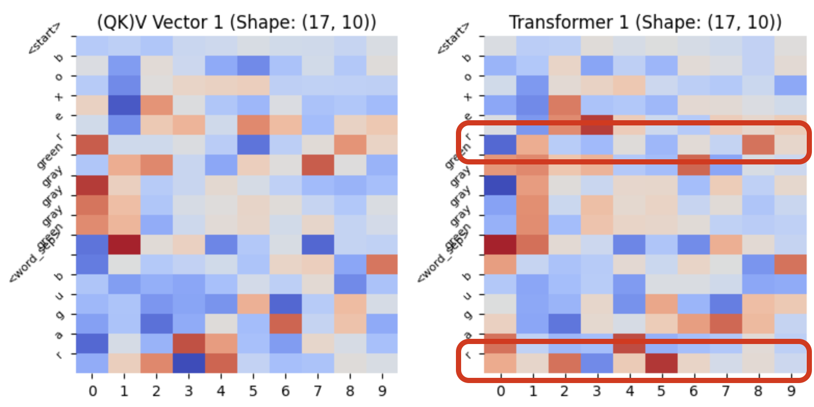

Playing with Words and AI: How Wordle Illuminates Language Model Mechanics
Hey there! Ever wondered how tools like ChatGPT seem to understand and respond to us so well? It's like magic, right? Well, behind this magic lies a nifty trick called 'transformers' – no, not the robots, but something equally cool. These transformers are the brains behind popular language models, sifting through tons of text to learn how to chat with us. But let's be honest, diving into how they work can get pretty heavy.
So, I had this fun idea: why not use the Wordle game to peel back the layers of these language models? If you've played Wordle, you know it's all about making smart guesses based on clues. And guess what? That's kind of like how these AI brains learn from the endless stream of data. Intrigued? Let's take this quirky journey together and uncover the secrets of AI, one Wordle guess at a time!
Explaining Wordle: The Game of Words and Wits

Imagine a game that's like a mini-puzzle for your brain, where words are the pieces. That's Wordle for you! In this simple yet captivating game, you have six chances to guess a five-letter word. Each guess gives you clues: letters that are right and in the correct spot turn green, letters that are in the word but in the wrong spot turn yellow, and letters not in the word stay unhighlighted. It's a daily brain teaser that's won hearts globally, not just because it's fun, but because it challenges you to think differently with each guess. Each round is a new adventure in word-guessing, where you learn from your previous guesses and inch closer to the solution. Simple, yet intriguing, right?
Unpacking My Wordle Solver: A Mini AI at Play
Now, let me introduce you to my little creation: a Wordle solver that's as clever as it is simple. The journey of this solver mirrors the way a language model sifts through information. Here's how it works:
- Starting Big: It begins by gathering all English words from a database, specifically targeting those with 5 letters – the perfect candidates for our Wordle game.
- The First Guess: A random word is picked from this list. Think of this as the initial 'hypothesis' in an experiment.
- Learning from Feedback: Each guess is evaluated based on the game's feedback. The solver then refines its word list, filtering out the words that don't match the clues.
- Scoring System: The real magic happens here. Each word is scored based on the likelihood of a letter appearing in a specific position. This scoring is akin to how a language model evaluates the probability of a word or a letter in a sentence.
- Narrowing Down: From this scored list, the top contenders are picked for the next guess. It's a process of constant learning and adapting, much like how AI models train and improve.
- Repeat and Refine: The cycle continues until the right word is found or the attempts run out.
Here's the python code to filter and score words
def filter_words(words_list, guess, feedback):
filtered_words = words_list
letter_counts = {} # only valid letters
for letter, color in zip(guess, feedback):
if color in ['yellow', 'green']:
if letter not in letter_counts:
letter_counts[letter] = 0
letter_counts[letter] += 1
for i, letter in enumerate(guess):
if feedback[i] == 'green':
filtered_words = [word for word in filtered_words if word[i] == letter]
elif feedback[i] == 'yellow':
filtered_words = [word for word in filtered_words if word[i] != letter and letter in word and word.count(letter) >= letter_counts[letter]]
elif feedback[i] == 'gray' and letter not in letter_counts:
filtered_words = [word for word in filtered_words if letter not in word]
return filtered_words
def score_word(word, past_guesses, past_feedbacks):
score = 0
alphabet = 'abcdefghijklmnopqrstuvwxyz'
for i, letter in enumerate(word):
char_index = alphabet.index(letter)
# Increase score based on normalized frequency of the letter in that position
score += normalized_position_counts[char_index][i] * 100 # Scaling factor
for guess, feedback in zip(past_guesses, past_feedbacks):
if feedback[i] == 'green':
score += 1000 if word[i] == guess[i] else -1000 # Adjusted for impact
elif feedback[i] == 'yellow':
score += 500 if letter in guess and word[i] != guess[i] else -500
elif feedback[i] == 'gray':
score -= 500 if letter in guess else 0
return score
While we now have a handy tool to tackle Wordle puzzles, there's a bigger picture to consider. Imagine using this tool to play numerous Wordle games, creating a treasure trove of data. This data becomes the training ground for our transformer models.However, it's crucial to remember that our goal here is not about achieving a 100% success rate in Wordle; it's about uncovering the principles that enable these AI models to learn and adapt, mirroring the complexities of human language understanding.
Approach 1: Training with Complete Word Predictions
In our first approach, the aim was to teach the model how to play Wordle, much like we humans do. So, loop playing 1000 Wordle games, using a random 5-letter word from the English corpus as the target word each time. This created a unique dataset, with a series of guess matrices as inputs and the subsequent guesses with their feedback as the expected outputs.
For instance, if the target word was guessed correctly on the 4th try, this resulted in 3 input-output (I/O) pairs for our dataset. Each input had a shape of 5x145 (each of 145 representing 5 letters of each guess ie., 5x29, where 29 accounts for 26 English characters plus 3 colors for feedback). In cases where there were fewer than 5 guesses, the remaining rows in the input matrix were filled with zeros.
After training the model with this dataset, below are the guesses to reach the target word TORIC:
f i e n t
r a a a i
t r i t r
t o r i r
t o r i c
From the predictions made in the above example, it becomes evident how the model is not just guessing but actually learning and evolving. Each round of feedback it receives is like a clue, guiding it closer to the target word. This iterative learning process demonstrates that the model has grasped the fundamental rules of Wordle – making intelligent guesses based on previous feedback and refining its strategy with each step. To really understand the sophistication of the model's outputs, we can delve into the data distribution patterns that emerge from various inputs. This analysis reveals the intricate ways in which the model adapts and predicts, highlighting its ability to mimic complex decision-making processes.
Now the real test began. Play another 1000 Wordle games, but this time, let the model make the guesses. The fascinating part? When we plotted a stacked bar chart showing the distribution of each character's presence in each of the 5 positions, the charts from the original dataset and the model's predictions were strikingly similar. This was a clear indication of how well the transformer-based language model had learned and replicated the data distribution patterns found in the original Wordle dataset.
Here's the python code for the model
class WordleTransformer(nn.Module):
def __init__(self, nhead=5, num_layers=3):
super(WordleTransformer, self).__init__()
self.transformer_encoder_layer = nn.TransformerEncoderLayer(d_model=29 * 5,
nhead=nhead,
batch_first=True)
self.transformer_encoder = nn.TransformerEncoder(self.transformer_encoder_layer, num_layers=num_layers)
# Flatten the output of the transformer and then project it to the required size
self.fc = nn.Linear(29 * 5 * 5, 29 * 5)
def forward(self, x):
# Reshape x to fit the transformer encoder's input shape
x = x.view(x.size(0), -1, 29 * 5) # Reshape to [batch_size, 5, 29*5]
x = self.transformer_encoder(x)
x = x.view(x.size(0), -1) # Flatten the transformer's output
x = self.fc(x)
return x.view(-1, 5, 29) # Reshape to (batch_size, 5 letters, 26 alphabet and 3 labels)
However, To see the whole process in action, check out the detailed Jupyter notebook, which I'll link here for those interested in diving deeper into the data and analysis.
In our first approach, we treated each complete word as a single token, sending five such tokens as input to the transformer model. The task for the model was to map these to a set of 5 characters, each coupled with feedback, to predict the next guess. This method, while effective for our purpose, differs from how large language models are usually trained.
Typically, these models learn to predict the next token based on the preceding ones, where a token can be an entire word or part of a word. In natural language, each word is connected to its predecessors in some way, creating a complex web of relations and meanings. By lining up the Wordle matrix and treating each character as a separate token, we see a simplified yet striking resemblance to natural language processing. Here, like in everyday speech, each character in the guess depends on the previous characters and their associated feedback. The rules are simpler and more defined, but the fundamental concept of sequential dependence remains.
With this understanding, let's move to the next approach. Here, we'll train our model to predict each character of the next guess individually, mirroring more closely how large language models process and generate text.
Approach 2: Training to predict character by character
In this approach, we take a slightly different path. Just like before, we begin by generating a dataset. This involves playing another 1000 Wordle games with various target words using our mini AI tool. However, this time, we only consider the final guess matrix from each game for our dataset.
Our input-output pairs are quite intriguing in this setup:
- The input starts with the first guess and its feedback, and the expected output is the first character of the next guess.
- We continue adding characters from the next guess to the input, one by one, with each subsequent character becoming the new expected output.
Here's a python code block that illustrates how we create this training data
class WordleDataset(Dataset):
def __init__(self, io_pairs, token_to_id):
self.input_seqs = []
self.target_seqs = []
for input_sequence, _ in io_pairs:
# Convert the sequence into token IDs, including the special tokens
tokenized_sequence = [token_to_id['<start>']]
for guess, feedback in input_sequence:
tokenized_sequence.extend([token_to_id[char] for char in guess])
tokenized_sequence.extend([token_to_id[fb] for fb in feedback])
tokenized_sequence.append(token_to_id['<word_sep>'])
tokenized_sequence.append(token_to_id['<end>'])
# Shift the tokenized sequence to create the target sequence
shifted_sequence = tokenized_sequence[1:] + [token_to_id['<pad>']]
# Ensure the input and target sequences are of equal length
self.input_seqs.append(tokenized_sequence)
self.target_seqs.append(shifted_sequence)
def __len__(self):
return len(self.input_seqs)
def __getitem__(self, idx):
input_seq = torch.tensor(self.input_seqs[idx], dtype=torch.long)
target_seq = torch.tensor(self.target_seqs[idx], dtype=torch.long)
return input_seq, target_seq
Let's look at an example:
Input: <start>, q, u, e, l, l, gray, green, gray, yellow, gray, <word_sep>, g
Output: u
In this method, we feed the model a sequence of 12 tokens – a mix of alphabets, colors, and special words – and ask it to predict the next character, color, or special word. Through this, the model learns to make guesses character by character, considering past guesses and their feedbacks.
Here's the python code for the model
def generate_square_subsequent_mask(size):
mask = torch.triu(torch.ones(size, size) * float('-inf'), diagonal=1).to(device)
return mask
class WordleTransformer(nn.Module):
def __init__(self, vocab_size, embed_dim, num_heads, num_encoder_layers, max_seq_length):
super(WordleTransformer, self).__init__()
self.embedding = nn.Embedding(vocab_size, embed_dim)
self.positional_embedding = nn.Embedding(max_seq_length, embed_dim)
self.layers = nn.ModuleList([CustomAttention(embed_dim, num_heads) for _ in range(num_encoder_layers)])
self.final_linear = nn.Linear(embed_dim, vocab_size)
def forward(self, src):
src = self.embedding(src)
seq_length = src.size(1)
positions = torch.arange(seq_length, device=src.device).unsqueeze(0).repeat(src.size(0), 1)
src = src + self.positional_embedding(positions)
attention_weights = []
mask = generate_square_subsequent_mask(seq_length)
for layer in self.layers:
src, layer_attention, context_emb = layer(src, mask)
attention_weights.append(layer_attention)
output = self.final_linear(src)
return output, attention_weights
# Meta Params
vocab_size = len(token_to_id)
embed_dim = 256
num_heads = 32
num_encoder_layers = 3
max_seq_length = 60
A sample result post-training is quite revealing:
Input sequence: <start>, p, o, u, n, d, green, yellow, grey, grey, green
Predicted next 17 tokens: p, a, r, o, d, green, green, gray, green, green, <word_sep>, p, a, p, o, d, green
Notice how the model generates colors right after five characters and then a word separator, perfectly following our training pattern. This shows that it has learned the overall data pattern. More interestingly, the model's use of 'green' after 'd' in 'parod' signals to keep the same letter in the first position for the next guess – a strategy similar to how we humans approach Wordle puzzles.
But that's not all. Let's look at more results:
Input: round [green, yellow, grey, grey, green], Predicted: r, a, l, o, d
Input: audio [green, yellow, grey, grey, green], Predicted: a, l, o, u, o
Input: phone [green, yellow, grey, grey, green], Predicted: p, a, h, a, e
Input: shift [green, yellow, grey, grey, green], Predicted: s, t, h, o, t
These examples highlight how the model maintains green-coded letters in the same positions and shifts yellow-coded letters to increase their chance of turning green in the next guess.
So far, we've seen what the model predicts. Next, let's dive deeper into its internals. We'll explore what happens after each layer and how attention is applied to previous tokens, visualizing the layer outputs and attention matrices at each level. Stay tuned for an eye-opening journey into the heart of the transformer!
Delving Deeper: Understanding the Transformer's Internals
In our second approach, we observe an intriguing aspect of the transformer model – its ability to process and predict each character and color. Let's examine an example and explore what it's doing with the other tokens:
For the input 'boxer' with the feedback ['green','gray','gray','gray','green'], the model's output across different tokens is as follows:
s, a, u, e, r, gray, gray, gray, gray, gray, <word_sep>, b
s, a, u, e, r, gray, gray, gray, gray, gray, <word_sep>, b, u
s, a, u, e, r, gray, gray, gray, gray, gray, <word_sep>, b, u, g
s, a, u, e, r, gray, gray, gray, gray, gray, <word_sep>, b, u, g, a
s, a, u, e, r, gray, gray, gray, gray, gray, <word_sep>, b, u, g, a, r
s, a, u, e, r, gray, gray, gray, gray, gray, <word_sep>, b, u, g, a, r, green
In the beginning, the outputs seem random because the model is working with limited context. However, after generating five letters, it starts producing colors – a learned behavior from our dataset. Notably, when 'green' aligns with a specific letter in the input (like 'b' in 'boxer'), the model learns to replicate that letter in the same position in its next guess.
Now, let's dive into the model's layers to see how this transformation happens:
Let's take a journey through each layer of our model and visualize how it processes the input sequence:
1. Embedding Layer & Positional Embedding Layer:
Here, each character gets a unique embedding, and positional information is added. The same letters at different positions have slightly different shades, indicating their unique positions.
2. Transformer Layer 1:
This layer adds Wordle-specific context to each token, as seen in the varying embedding patterns for the same characters at different positions.

3. Transformer Layer 2:
A noticeable shift occurs here, with letters mapped to 'green' in previous tokens showing different patterns, highlighting the model's learning to predict the next token.
4. Transformer Layer 3:
Here, the difference between letters and colors becomes even more pronounced, preparing the input tokens for the final prediction. The model sharpens its focus on crucial details. Here, as it anticipates predicting 'green' for the letter 'b', we see a distinct blue shade highlighting 'b' in the heatmap. This indicates the model's recognition of 'b's correct position, influenced by the green feedback for next guess.
5. Linear (Output) Layer:
This layer shows high confidence in predicting certain tokens, like 'green' after 'b', and 'word_sep' after 'green', indicating the model's learned patterns.
Finally, let's look at the 32 attention heads. Each head attends to different parts of the input in unique ways, demonstrating the complexity and adaptability of the transformer model.
For those of you eager to explore these concepts in even more depth, I invite you to check out the detailed Jupyter notebook. It's packed with additional insights and visualizations that bring these ideas to life. Dive in and satisfy your curiosity!
Future Work: Expanding Horizons in AI and Wordle
As we look ahead, the potential for further exploration and innovation in the realm of AI, particularly in relation to our Wordle-based language model, is vast and exciting. Here are some avenues for future work that promise to deepen our understanding and enhance the capabilities of these models:
-
Contextual Endurance: Testing the model's ability to maintain context over extended plays is crucial. We aim to see if its performance remains consistent or degrades with longer sequences, pushing the limits of its memory and learning capacity.
-
Intermediate Layer Outputs: Exploring whether we can predict certain token-based outputs from the model's intermediate layers will provide insights into the internal processing stages and how each contributes to the final prediction.
-
Game Rule Adaptation: By fine-tuning the model with variations in Wordle's rules, we can observe how changes in the game's structure impact the model's learning patterns and weight adjustments. This experiment will highlight the model's adaptability and resilience to rule changes.
-
Robustness Testing: Feeding the model challenging or even misleading sequences will test its robustness and error-handling abilities. This step is essential in understanding the model's limits and areas for improvement.
-
Architectural Experiments: Trying out different architectural changes in the model and observing their behavior will allow us to refine its design for optimal performance and efficiency.
-
Open-Ended Exploration: The field of AI is ever-evolving, and as new ideas and technologies emerge, we will continue to integrate them into our research, ensuring that our exploration remains at the cutting edge of innovation.
One key advantage of using Wordle-like games in our AI research is their computational efficiency. Unlike the heavy processing demands of experimenting with real text and large-scale models, Wordle offers a more manageable and less time-consuming platform. This simplicity allows for more frequent and varied experiments, enabling us to test hypotheses and observe results more rapidly. It's a perfect testbed for AI experimentation, where we can tweak, adjust, and innovate without the burden of extensive computational resources.
By harnessing the simplicity and versatility of Wordle, we can push the boundaries of AI research in a more practical and accessible way. This approach not only saves time and resources but also provides a clear and tangible framework for understanding complex AI concepts. As we continue to explore and experiment with this model, the insights gained here could very well inform and enhance our approaches to dealing with real text and larger models in the future.
Conclusion: A Journey Through AI with Wordle as Our Guide
As we come to the end of this enlightening journey, it's clear that the world of AI and transformers is less daunting when viewed through the familiar lens of the Wordle game. We've seen how a simple yet strategic word game can mirror the complex processes of language models. Our exploration from the basic rules of Wordle to the sophisticated layers of a transformer model has shown us the adaptable and learning nature of AI. By breaking down each step, from predicting complete words to individual characters, we've uncovered how these models process information, learn from feedback, and make intelligent predictions.
This journey is more than just understanding AI; it's about appreciating the beauty of machine learning and its ability to mirror human-like decision-making in a structured, logical manner. So, next time you play Wordle or interact with a language model, remember the intricate dance of algorithms and data behind the scenes, making each guess and response possible. And as technology continues to evolve, so will our understanding and capabilities, opening up new frontiers for innovation and discovery in the realm of AI.